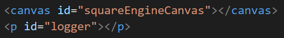
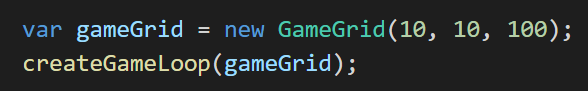
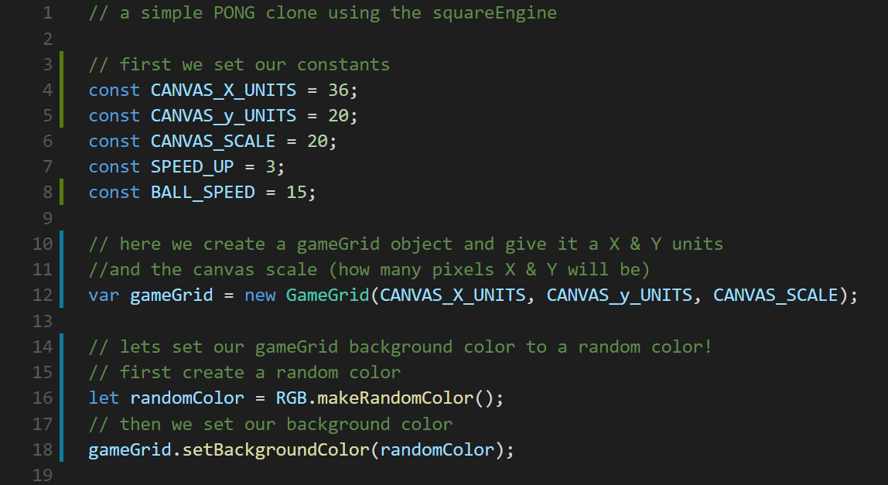
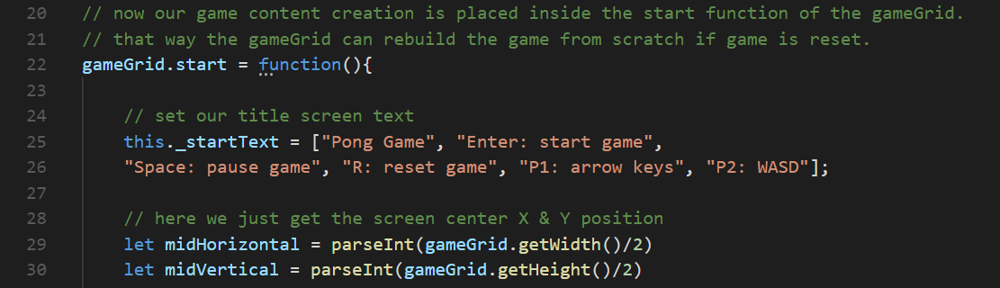
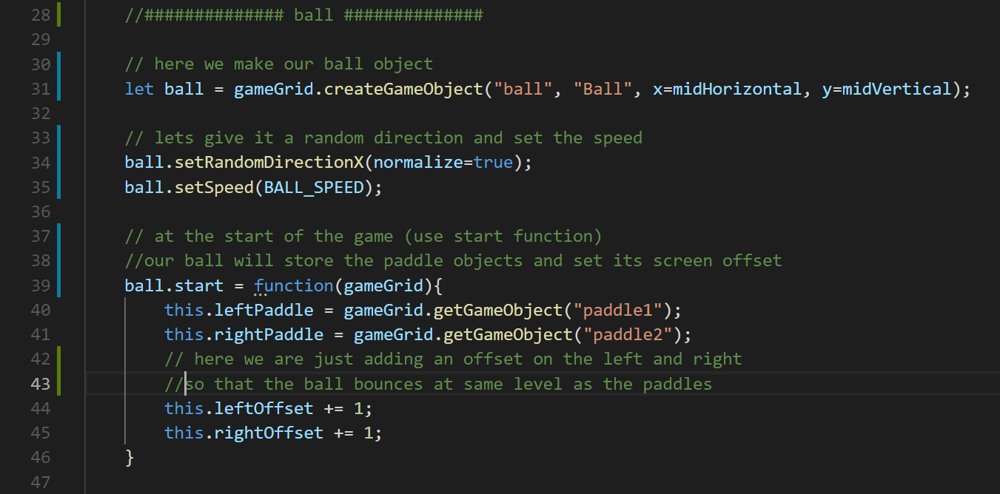
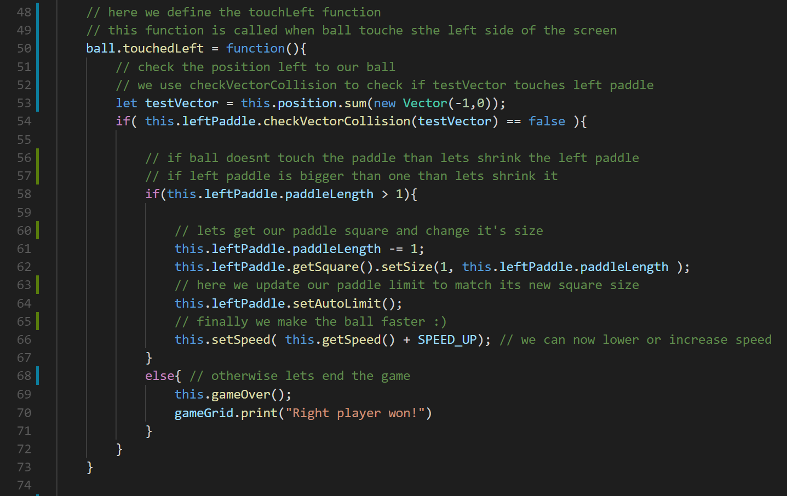
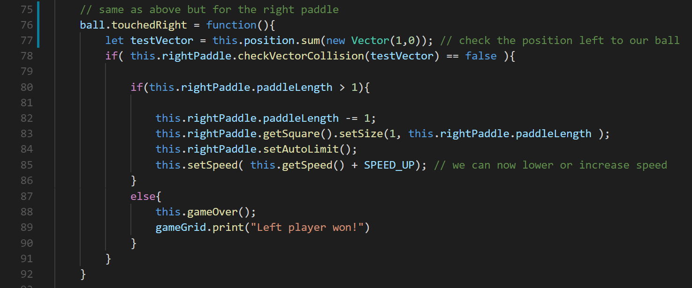
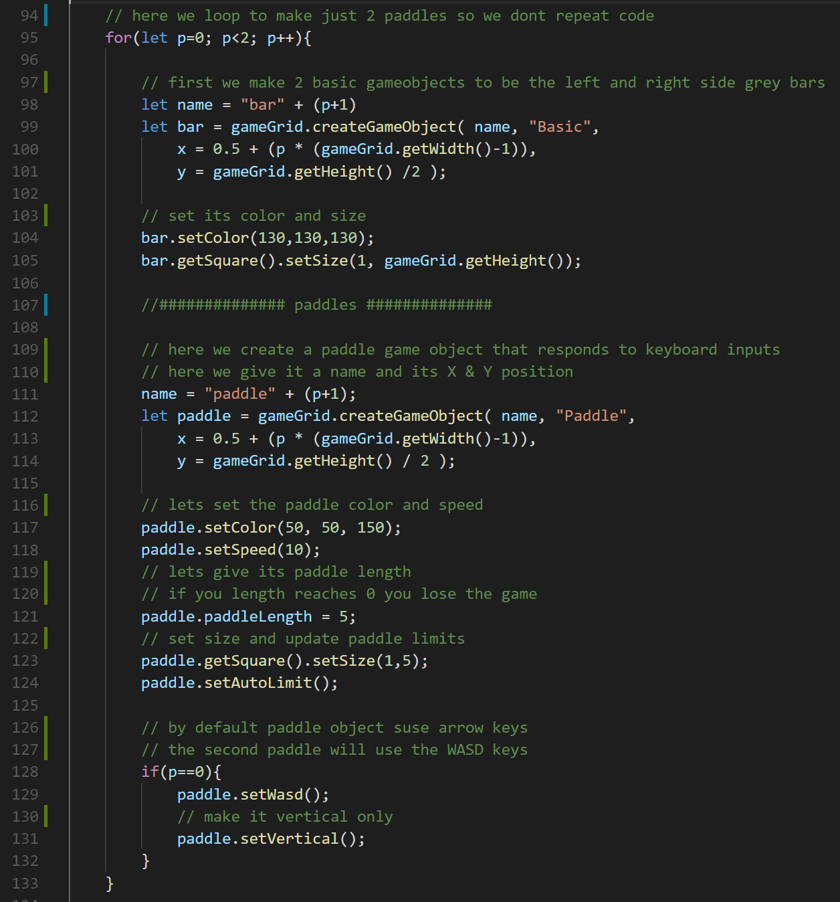
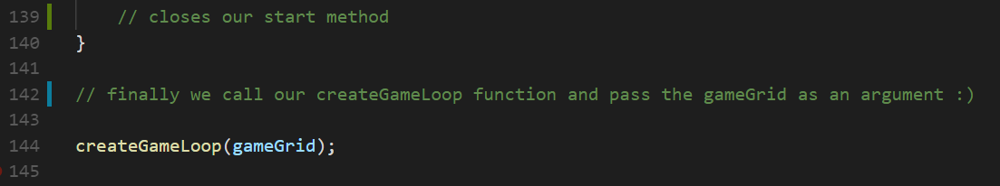

The first step is to load the library inside your HTML file

Then make sure you have a canvas and paragraph elements with these IDs

Then after the body element is loaded you can then call your game.js file.
You can also call your game.js file on the onLoad or on $.ready().
The only 2 javascript lines needed to have a basic game working is:

The first line you are creating a gameGrid object and passing it's X units, Y units and scale.
The X and Y units are how many 1 unit squares you can have horizontally and vertically.
The scale is just how many pixels per unit you will have. X=10 * scale=100 = 1000 pixels horixontally.
In the second line you are just giving gameGrid object to the createGameLoop function.
That's all you need to get a gameGrid running.
Now, you can't do much with a blank screen.
You probably want to create gameObjects and overwrite some of its methods.
You can look at the pong game example file at Github.
Creating and setting a gameGrid
Define game inside start function
Create ball
Define ball touch left screen
Define ball touch right screen
Create our paddles
Give gameGrid to createGameLoop function
BACK TO TOP